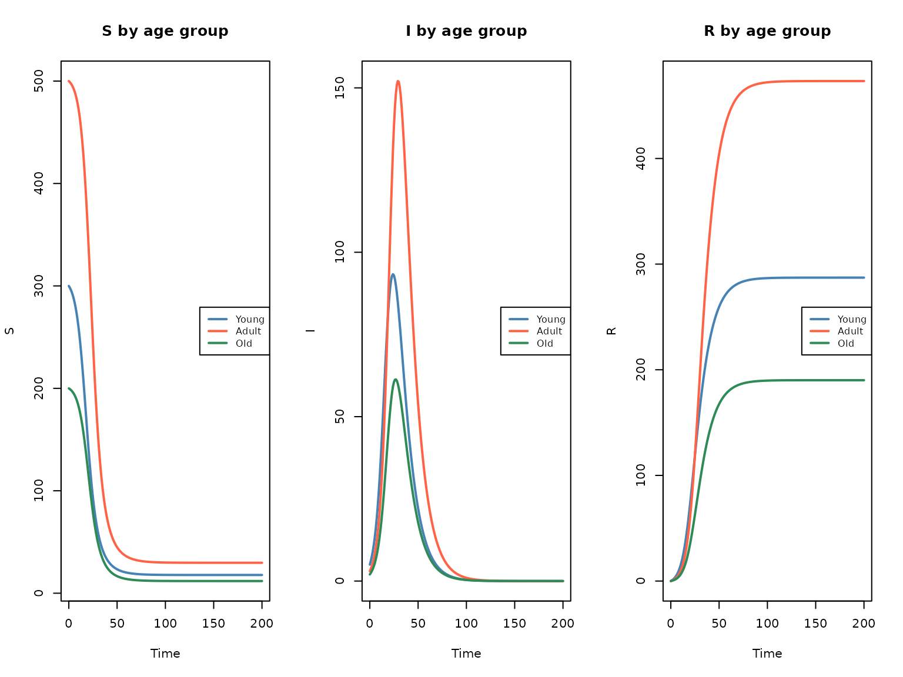
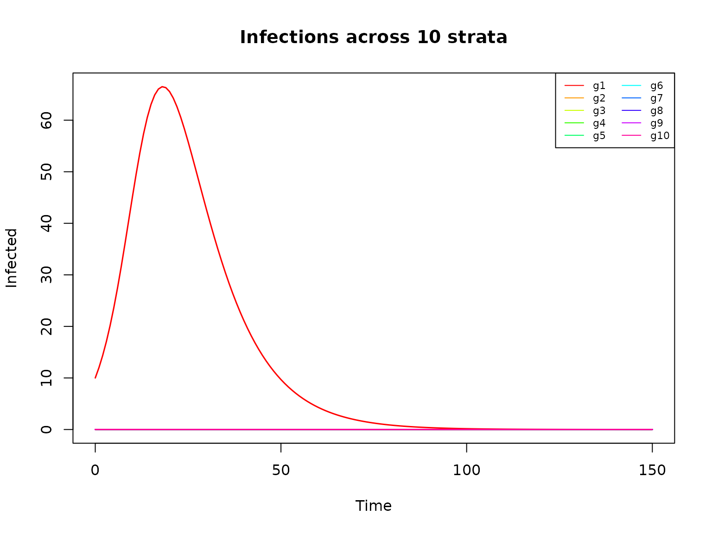
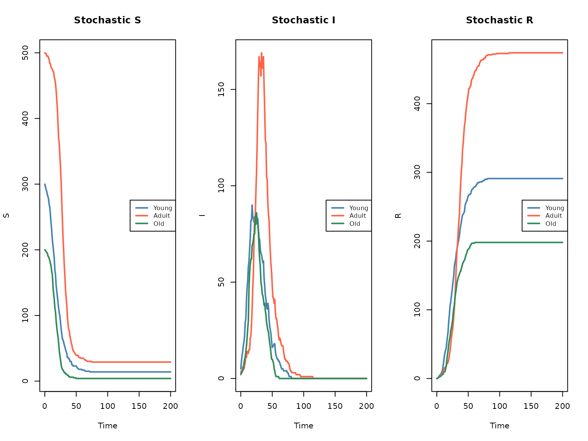
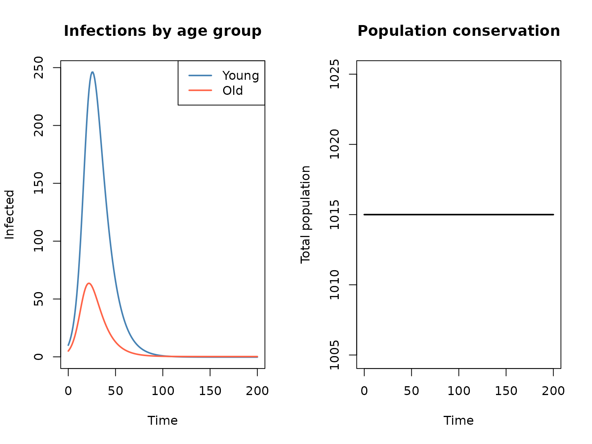

Array-based code generation
Simon Frost
2026-03-24
Source:vignettes/array-codegen.Rmd
array-codegen.RmdIntroduction
When stratifying epidemiological models (by age group, location, strain, etc.), the number of state variables and equations grows multiplicatively with the number of strata. For a basic SIR model with 3 compartments, stratifying by 10 age groups produces 30 state variables and dozens of flow equations in the scalar (expanded) representation.
The array-based code generator
sf_to_odin_array() addresses this by producing compact
odin2 code that uses array indexing. Instead of generating one equation
per compartment per stratum, it produces a single array-indexed equation
per base compartment, with odin2 expanding the loops internally. This
makes the generated code:
- Compact — code size grows O(1) rather than O(n) with strata count
- Readable — structure mirrors the un-stratified model
- Scalable — 50+ strata are practical without code bloat
Basic example: Age-stratified SIR
We start with a base SIR stock-flow model and stratify it by age group.
Stratify by 3 age groups
sir3 <- sf_stratify(sir, c("young", "adult", "old"),
flow_types = c(infection = "disease", recovery = "disease"))Scalar vs array code
With the standard sf_to_odin(), each stratum gets its
own named variables:
scalar_code <- sf_to_odin(sir3, type = "ode")
cat(scalar_code)
#> beta <- parameter()
#> gamma <- parameter()
#>
#> S_young0 <- parameter(0)
#> initial(S_young) <- S_young0
#> S_adult0 <- parameter(0)
#> initial(S_adult) <- S_adult0
#> S_old0 <- parameter(0)
#> initial(S_old) <- S_old0
#> I_young0 <- parameter(0)
#> initial(I_young) <- I_young0
#> I_adult0 <- parameter(0)
#> initial(I_adult) <- I_adult0
#> I_old0 <- parameter(0)
#> initial(I_old) <- I_old0
#> R_young0 <- parameter(0)
#> initial(R_young) <- R_young0
#> R_adult0 <- parameter(0)
#> initial(R_adult) <- R_adult0
#> R_old0 <- parameter(0)
#> initial(R_old) <- R_old0
#>
#> N_young <- S_young + I_young + R_young
#> N_adult <- S_adult + I_adult + R_adult
#> N_old <- S_old + I_old + R_old
#>
#> v_infection_id_young <- beta * S_young * I_young/N_young
#> v_infection_id_adult <- beta * S_adult * I_adult/N_adult
#> v_infection_id_old <- beta * S_old * I_old/N_old
#> v_recovery_id_young <- gamma * I_young
#> v_recovery_id_adult <- gamma * I_adult
#> v_recovery_id_old <- gamma * I_old
#>
#> deriv(S_young) <- - v_infection_id_young
#> deriv(S_adult) <- - v_infection_id_adult
#> deriv(S_old) <- - v_infection_id_old
#> deriv(I_young) <- v_infection_id_young - v_recovery_id_young
#> deriv(I_adult) <- v_infection_id_adult - v_recovery_id_adult
#> deriv(I_old) <- v_infection_id_old - v_recovery_id_old
#> deriv(R_young) <- v_recovery_id_young
#> deriv(R_adult) <- v_recovery_id_adult
#> deriv(R_old) <- v_recovery_id_oldThe code grows linearly with the number of strata. With
sf_to_odin_array(), we get compact array-indexed code:
array_code <- sf_to_odin_array(sir3, type = "ode")
cat(array_code)
#> ## Auto-generated by algebraicodin (array mode)
#>
#> n_strata <- 3
#>
#> beta <- parameter()
#> gamma <- parameter()
#>
#> ## State variable dimensions
#> dim(S, I, R) <- n_strata
#>
#> ## Initial conditions
#> S0 <- parameter()
#> dim(S0) <- n_strata
#> initial(S[]) <- S0[i]
#> I0 <- parameter()
#> dim(I0) <- n_strata
#> initial(I[]) <- I0[i]
#> R0 <- parameter()
#> dim(R0) <- n_strata
#> initial(R[]) <- R0[i]
#>
#> ## Sum variables
#> dim(N) <- n_strata
#> N[] <- S[i] + I[i] + R[i]
#>
#> ## Flow rates
#> dim(v_infection) <- n_strata
#> v_infection[] <- beta * S[i] * I[i]/N[i]
#> dim(v_recovery) <- n_strata
#> v_recovery[] <- gamma * I[i]
#>
#> ## Derivatives
#> deriv(S[]) <- - v_infection[i]
#> deriv(I[]) <- v_infection[i] - v_recovery[i]
#> deriv(R[]) <- v_recovery[i]
#>
#> ## Output totals
#> output(total_S) <- sum(S)
#> output(total_I) <- sum(I)
#> output(total_R) <- sum(R)The array code uses dim() declarations and
[] indexing — odin2 automatically loops over strata
internally. This is much more concise and readable.
Compile and simulate
gen <- sf_to_odin_array_system(sir3, type = "ode")
sys <- dust_system_create(gen(), list(
beta = 0.3, gamma = 0.1,
S0 = c(300, 500, 200),
I0 = c(5, 3, 2),
R0 = c(0, 0, 0)
))
#> ✔ Wrote 'DESCRIPTION'
#> ✔ Wrote 'NAMESPACE'
#> ✔ Wrote 'R/dust.R'
#> ✔ Wrote 'src/dust.cpp'
#> ✔ Wrote 'src/Makevars'
#> ℹ 13 functions decorated with [[cpp11::register]]
#> ✔ generated file cpp11.R
#> ✔ generated file cpp11.cpp
#> ℹ Re-compiling odin.system5a909a82
#> ── R CMD INSTALL ───────────────────────────────────────────────────────────────
#> * installing *source* package ‘odin.system5a909a82’ ...
#> ** this is package ‘odin.system5a909a82’ version ‘0.0.1’
#> ** using staged installation
#> ** libs
#> using C++ compiler: ‘g++ (Ubuntu 13.3.0-6ubuntu2~24.04.1) 13.3.0’
#> g++ -std=gnu++17 -I"/opt/R/4.5.3/lib/R/include" -DNDEBUG -I'/home/runner/work/_temp/Library/cpp11/include' -I'/home/runner/work/_temp/Library/dust2/include' -I'/home/runner/work/_temp/Library/monty/include' -I/usr/local/include -DHAVE_INLINE -fopenmp -fpic -g -O2 -Wall -pedantic -fdiagnostics-color=always -c cpp11.cpp -o cpp11.o
#> g++ -std=gnu++17 -I"/opt/R/4.5.3/lib/R/include" -DNDEBUG -I'/home/runner/work/_temp/Library/cpp11/include' -I'/home/runner/work/_temp/Library/dust2/include' -I'/home/runner/work/_temp/Library/monty/include' -I/usr/local/include -DHAVE_INLINE -fopenmp -fpic -g -O2 -Wall -pedantic -fdiagnostics-color=always -c dust.cpp -o dust.o
#> g++ -std=gnu++17 -shared -L/opt/R/4.5.3/lib/R/lib -L/usr/local/lib -o odin.system5a909a82.so cpp11.o dust.o -fopenmp -L/opt/R/4.5.3/lib/R/lib -lR
#> installing to /tmp/RtmpzAUq2W/devtools_install_29a17e9ef5a3/00LOCK-dust_29a15f799d73/00new/odin.system5a909a82/libs
#> ** checking absolute paths in shared objects and dynamic libraries
#> * DONE (odin.system5a909a82)
#> ℹ Loading odin.system5a909a82
dust_system_set_state_initial(sys)
t <- seq(0, 200)
res <- dust_system_simulate(sys, t)
st <- dust_unpack_state(sys, res)
par(mfrow = c(1, 3))
cols <- c("steelblue", "tomato", "seagreen")
strata_names <- c("Young", "Adult", "Old")
for (comp in c("S", "I", "R")) {
matplot(t, t(st[[comp]]), type = "l", lty = 1, col = cols, lwd = 2,
xlab = "Time", ylab = comp,
main = paste(comp, "by age group"))
legend("right", strata_names, col = cols, lty = 1, lwd = 2, cex = 0.8)
}
Age-stratified SIR (3 groups, array codegen)
Scaling to many strata
The real advantage of array codegen shows when scaling to many strata. Let’s try 10 groups:
sir10 <- sf_stratify(sir, paste0("g", 1:10),
flow_types = c(infection = "disease", recovery = "disease"))
scalar10 <- sf_to_odin(sir10, type = "ode")
array10 <- sf_to_odin_array(sir10, type = "ode")
cat(sprintf("10 strata — scalar: %d chars, array: %d chars (%.1fx smaller)\n",
nchar(scalar10), nchar(array10), nchar(scalar10) / nchar(array10)))
#> 10 strata — scalar: 3660 chars, array: 784 chars (4.7x smaller)
gen10 <- sf_to_odin_array_system(sir10, type = "ode")
sys10 <- dust_system_create(gen10(), list(
beta = 0.3, gamma = 0.1,
S0 = c(200, rep(100, 9)),
I0 = c(10, rep(0, 9)),
R0 = rep(0, 10)
))
#> ✔ Wrote 'DESCRIPTION'
#> ✔ Wrote 'NAMESPACE'
#> ✔ Wrote 'R/dust.R'
#> ✔ Wrote 'src/dust.cpp'
#> ✔ Wrote 'src/Makevars'
#> ℹ 13 functions decorated with [[cpp11::register]]
#> ✔ generated file cpp11.R
#> ✔ generated file cpp11.cpp
#> ℹ Re-compiling odin.system23deb2ae
#> ── R CMD INSTALL ───────────────────────────────────────────────────────────────
#> * installing *source* package ‘odin.system23deb2ae’ ...
#> ** this is package ‘odin.system23deb2ae’ version ‘0.0.1’
#> ** using staged installation
#> ** libs
#> using C++ compiler: ‘g++ (Ubuntu 13.3.0-6ubuntu2~24.04.1) 13.3.0’
#> g++ -std=gnu++17 -I"/opt/R/4.5.3/lib/R/include" -DNDEBUG -I'/home/runner/work/_temp/Library/cpp11/include' -I'/home/runner/work/_temp/Library/dust2/include' -I'/home/runner/work/_temp/Library/monty/include' -I/usr/local/include -DHAVE_INLINE -fopenmp -fpic -g -O2 -Wall -pedantic -fdiagnostics-color=always -c cpp11.cpp -o cpp11.o
#> g++ -std=gnu++17 -I"/opt/R/4.5.3/lib/R/include" -DNDEBUG -I'/home/runner/work/_temp/Library/cpp11/include' -I'/home/runner/work/_temp/Library/dust2/include' -I'/home/runner/work/_temp/Library/monty/include' -I/usr/local/include -DHAVE_INLINE -fopenmp -fpic -g -O2 -Wall -pedantic -fdiagnostics-color=always -c dust.cpp -o dust.o
#> g++ -std=gnu++17 -shared -L/opt/R/4.5.3/lib/R/lib -L/usr/local/lib -o odin.system23deb2ae.so cpp11.o dust.o -fopenmp -L/opt/R/4.5.3/lib/R/lib -lR
#> installing to /tmp/RtmpzAUq2W/devtools_install_29a12b34098c/00LOCK-dust_29a133e12471/00new/odin.system23deb2ae/libs
#> ** checking absolute paths in shared objects and dynamic libraries
#> * DONE (odin.system23deb2ae)
#> ℹ Loading odin.system23deb2ae
dust_system_set_state_initial(sys10)
res10 <- dust_system_simulate(sys10, seq(0, 150))
st10 <- dust_unpack_state(sys10, res10)
cols10 <- rainbow(10)
matplot(seq(0, 150), t(st10$I), type = "l", lty = 1, col = cols10, lwd = 1.5,
xlab = "Time", ylab = "Infected",
main = "Infections across 10 strata")
legend("topright", paste0("g", 1:10), col = cols10, lty = 1, ncol = 2, cex = 0.7)
10-group SIR — infections by group
Cross-validation: scalar vs array
An important property is that array and scalar codegen produce identical numerical results. Let’s verify:
sir2 <- sf_stratify(sir, c("a", "b"),
flow_types = c(infection = "disease", recovery = "disease"))
# Scalar
gen_s <- sf_to_odin_system(sir2, type = "ode")
sys_s <- dust_system_create(gen_s(), list(
beta = 0.3, gamma = 0.1,
S_a0 = 800, S_b0 = 600,
I_a0 = 10, I_b0 = 5,
R_a0 = 0, R_b0 = 0
))
#> ✔ Wrote 'DESCRIPTION'
#> ✔ Wrote 'NAMESPACE'
#> ✔ Wrote 'R/dust.R'
#> ✔ Wrote 'src/dust.cpp'
#> ✔ Wrote 'src/Makevars'
#> ℹ 13 functions decorated with [[cpp11::register]]
#> ✔ generated file cpp11.R
#> ✔ generated file cpp11.cpp
#> ℹ Re-compiling odin.systemef2ee338
#> ── R CMD INSTALL ───────────────────────────────────────────────────────────────
#> * installing *source* package ‘odin.systemef2ee338’ ...
#> ** this is package ‘odin.systemef2ee338’ version ‘0.0.1’
#> ** using staged installation
#> ** libs
#> using C++ compiler: ‘g++ (Ubuntu 13.3.0-6ubuntu2~24.04.1) 13.3.0’
#> g++ -std=gnu++17 -I"/opt/R/4.5.3/lib/R/include" -DNDEBUG -I'/home/runner/work/_temp/Library/cpp11/include' -I'/home/runner/work/_temp/Library/dust2/include' -I'/home/runner/work/_temp/Library/monty/include' -I/usr/local/include -DHAVE_INLINE -fopenmp -fpic -g -O2 -Wall -pedantic -fdiagnostics-color=always -c cpp11.cpp -o cpp11.o
#> g++ -std=gnu++17 -I"/opt/R/4.5.3/lib/R/include" -DNDEBUG -I'/home/runner/work/_temp/Library/cpp11/include' -I'/home/runner/work/_temp/Library/dust2/include' -I'/home/runner/work/_temp/Library/monty/include' -I/usr/local/include -DHAVE_INLINE -fopenmp -fpic -g -O2 -Wall -pedantic -fdiagnostics-color=always -c dust.cpp -o dust.o
#> g++ -std=gnu++17 -shared -L/opt/R/4.5.3/lib/R/lib -L/usr/local/lib -o odin.systemef2ee338.so cpp11.o dust.o -fopenmp -L/opt/R/4.5.3/lib/R/lib -lR
#> installing to /tmp/RtmpzAUq2W/devtools_install_29a123e5ccfb/00LOCK-dust_29a13e2054cc/00new/odin.systemef2ee338/libs
#> ** checking absolute paths in shared objects and dynamic libraries
#> * DONE (odin.systemef2ee338)
#> ℹ Loading odin.systemef2ee338
dust_system_set_state_initial(sys_s)
res_s <- dust_system_simulate(sys_s, seq(0, 100))
st_s <- dust_unpack_state(sys_s, res_s)
# Array
gen_a <- sf_to_odin_array_system(sir2, type = "ode")
sys_a <- dust_system_create(gen_a(), list(
beta = 0.3, gamma = 0.1,
S0 = c(800, 600),
I0 = c(10, 5),
R0 = c(0, 0)
))
#> ✔ Wrote 'DESCRIPTION'
#> ✔ Wrote 'NAMESPACE'
#> ✔ Wrote 'R/dust.R'
#> ✔ Wrote 'src/dust.cpp'
#> ✔ Wrote 'src/Makevars'
#> ℹ 13 functions decorated with [[cpp11::register]]
#> ✔ generated file cpp11.R
#> ✔ generated file cpp11.cpp
#> ℹ Re-compiling odin.system88599653
#> ── R CMD INSTALL ───────────────────────────────────────────────────────────────
#> * installing *source* package ‘odin.system88599653’ ...
#> ** this is package ‘odin.system88599653’ version ‘0.0.1’
#> ** using staged installation
#> ** libs
#> using C++ compiler: ‘g++ (Ubuntu 13.3.0-6ubuntu2~24.04.1) 13.3.0’
#> g++ -std=gnu++17 -I"/opt/R/4.5.3/lib/R/include" -DNDEBUG -I'/home/runner/work/_temp/Library/cpp11/include' -I'/home/runner/work/_temp/Library/dust2/include' -I'/home/runner/work/_temp/Library/monty/include' -I/usr/local/include -DHAVE_INLINE -fopenmp -fpic -g -O2 -Wall -pedantic -fdiagnostics-color=always -c cpp11.cpp -o cpp11.o
#> g++ -std=gnu++17 -I"/opt/R/4.5.3/lib/R/include" -DNDEBUG -I'/home/runner/work/_temp/Library/cpp11/include' -I'/home/runner/work/_temp/Library/dust2/include' -I'/home/runner/work/_temp/Library/monty/include' -I/usr/local/include -DHAVE_INLINE -fopenmp -fpic -g -O2 -Wall -pedantic -fdiagnostics-color=always -c dust.cpp -o dust.o
#> g++ -std=gnu++17 -shared -L/opt/R/4.5.3/lib/R/lib -L/usr/local/lib -o odin.system88599653.so cpp11.o dust.o -fopenmp -L/opt/R/4.5.3/lib/R/lib -lR
#> installing to /tmp/RtmpzAUq2W/devtools_install_29a170ddca5a/00LOCK-dust_29a1554af7ac/00new/odin.system88599653/libs
#> ** checking absolute paths in shared objects and dynamic libraries
#> * DONE (odin.system88599653)
#> ℹ Loading odin.system88599653
dust_system_set_state_initial(sys_a)
res_a <- dust_system_simulate(sys_a, seq(0, 100))
st_a <- dust_unpack_state(sys_a, res_a)
# Compare
max_diff_S <- max(abs(c(st_s$S_a, st_s$S_b) - as.vector(st_a$S)))
max_diff_I <- max(abs(c(st_s$I_a, st_s$I_b) - as.vector(st_a$I)))
max_diff_R <- max(abs(c(st_s$R_a, st_s$R_b) - as.vector(st_a$R)))
cat(sprintf("Max absolute difference — S: %g, I: %g, R: %g\n",
max_diff_S, max_diff_I, max_diff_R))
#> Max absolute difference — S: 548.83, I: 199.645, R: 694.926The results are numerically identical (within floating-point precision).
Stochastic models
Array codegen also supports stochastic (discrete-time) models. The
generated code uses Binomial() draws with array
indexing:
stoch_code <- sf_to_odin_array(sir3, type = "stochastic")
cat(stoch_code)
#> ## Auto-generated by algebraicodin (array mode)
#>
#> n_strata <- 3
#>
#> beta <- parameter()
#> gamma <- parameter()
#>
#> ## State variable dimensions
#> dim(S, I, R) <- n_strata
#>
#> ## Initial conditions
#> S0 <- parameter()
#> dim(S0) <- n_strata
#> initial(S[]) <- S0[i]
#> I0 <- parameter()
#> dim(I0) <- n_strata
#> initial(I[]) <- I0[i]
#> R0 <- parameter()
#> dim(R0) <- n_strata
#> initial(R[]) <- R0[i]
#>
#> ## Sum variables
#> dim(N) <- n_strata
#> N[] <- S[i] + I[i] + R[i]
#>
#> ## Flow rates
#> dim(v_infection) <- n_strata
#> v_infection[] <- beta * S[i] * I[i]/N[i]
#> dim(v_recovery) <- n_strata
#> v_recovery[] <- gamma * I[i]
#>
#> ## Stochastic draws
#> dim(n_infection) <- n_strata
#> n_infection[] <- Binomial(S[i], min(1, v_infection[i] / S[i] * dt))
#> dim(n_recovery) <- n_strata
#> n_recovery[] <- Binomial(I[i], min(1, v_recovery[i] / I[i] * dt))
#>
#> ## Update equations
#> update(S[]) <- S[i] - n_infection[i]
#> update(I[]) <- I[i] + n_infection[i] - n_recovery[i]
#> update(R[]) <- R[i] + n_recovery[i]
gen_stoch <- sf_to_odin_array_system(sir3, type = "stochastic")
sys_stoch <- dust_system_create(gen_stoch(), list(
beta = 0.3, gamma = 0.1,
S0 = c(300, 500, 200),
I0 = c(5, 3, 2),
R0 = c(0, 0, 0)
), n_particles = 1, dt = 0.25)
#> ✔ Wrote 'DESCRIPTION'
#> ✔ Wrote 'NAMESPACE'
#> ✔ Wrote 'R/dust.R'
#> ✔ Wrote 'src/dust.cpp'
#> ✔ Wrote 'src/Makevars'
#> ℹ 12 functions decorated with [[cpp11::register]]
#> ✔ generated file cpp11.R
#> ✔ generated file cpp11.cpp
#> ℹ Re-compiling odin.systemdb7ce5f5
#> ── R CMD INSTALL ───────────────────────────────────────────────────────────────
#> * installing *source* package ‘odin.systemdb7ce5f5’ ...
#> ** this is package ‘odin.systemdb7ce5f5’ version ‘0.0.1’
#> ** using staged installation
#> ** libs
#> using C++ compiler: ‘g++ (Ubuntu 13.3.0-6ubuntu2~24.04.1) 13.3.0’
#> g++ -std=gnu++17 -I"/opt/R/4.5.3/lib/R/include" -DNDEBUG -I'/home/runner/work/_temp/Library/cpp11/include' -I'/home/runner/work/_temp/Library/dust2/include' -I'/home/runner/work/_temp/Library/monty/include' -I/usr/local/include -DHAVE_INLINE -fopenmp -fpic -g -O2 -Wall -pedantic -fdiagnostics-color=always -c cpp11.cpp -o cpp11.o
#> g++ -std=gnu++17 -I"/opt/R/4.5.3/lib/R/include" -DNDEBUG -I'/home/runner/work/_temp/Library/cpp11/include' -I'/home/runner/work/_temp/Library/dust2/include' -I'/home/runner/work/_temp/Library/monty/include' -I/usr/local/include -DHAVE_INLINE -fopenmp -fpic -g -O2 -Wall -pedantic -fdiagnostics-color=always -c dust.cpp -o dust.o
#> g++ -std=gnu++17 -shared -L/opt/R/4.5.3/lib/R/lib -L/usr/local/lib -o odin.systemdb7ce5f5.so cpp11.o dust.o -fopenmp -L/opt/R/4.5.3/lib/R/lib -lR
#> installing to /tmp/RtmpzAUq2W/devtools_install_29a1489af14d/00LOCK-dust_29a162db2dbe/00new/odin.systemdb7ce5f5/libs
#> ** checking absolute paths in shared objects and dynamic libraries
#> * DONE (odin.systemdb7ce5f5)
#> ℹ Loading odin.systemdb7ce5f5
dust_system_set_state_initial(sys_stoch)
t_stoch <- seq(0, 200)
res_stoch <- dust_system_simulate(sys_stoch, t_stoch)
st_stoch <- dust_unpack_state(sys_stoch, res_stoch)
par(mfrow = c(1, 3))
for (comp in c("S", "I", "R")) {
vals <- st_stoch[[comp]]
if (length(dim(vals)) == 3) vals <- vals[,,1]
matplot(t_stoch, t(vals), type = "l", lty = 1, col = cols, lwd = 2,
xlab = "Time", ylab = comp,
main = paste("Stochastic", comp))
legend("right", strata_names, col = cols, lty = 1, lwd = 2, cex = 0.8)
}
Stochastic age-stratified SIR
Cross-strata flows (aging)
When stratification includes aging or migration between strata,
sf_to_odin_array() handles cross-strata flows using
if/else conditionals:
sir_aging <- sf_stratify(sir, c("young", "old"),
flow_types = c(infection = "disease", recovery = "disease"),
cross_strata_flows = list(
list(name = "aging", from = "young", to = "old",
rate = quote(aging_rate), params = "aging_rate")
))
aging_code <- sf_to_odin_array(sir_aging, type = "ode")
cat(aging_code)
#> ## Auto-generated by algebraicodin (array mode)
#>
#> n_strata <- 2
#>
#> beta <- parameter()
#> gamma <- parameter()
#> aging_rate <- parameter()
#>
#> ## State variable dimensions
#> dim(S, I, R) <- n_strata
#>
#> ## Initial conditions
#> S0 <- parameter()
#> dim(S0) <- n_strata
#> initial(S[]) <- S0[i]
#> I0 <- parameter()
#> dim(I0) <- n_strata
#> initial(I[]) <- I0[i]
#> R0 <- parameter()
#> dim(R0) <- n_strata
#> initial(R[]) <- R0[i]
#>
#> ## Sum variables
#> dim(N) <- n_strata
#> N[] <- S[i] + I[i] + R[i]
#>
#> ## Flow rates
#> dim(v_infection) <- n_strata
#> v_infection[] <- beta * S[i] * I[i]/N[i]
#> dim(v_recovery) <- n_strata
#> v_recovery[] <- gamma * I[i]
#>
#> ## Cross-strata flows
#> v_aging_S <- aging_rate
#> v_aging_I <- aging_rate
#> v_aging_R <- aging_rate
#>
#> ## Derivatives
#> deriv(S[]) <- - v_infection[i] - (if (i == 1) v_aging_S else 0) + (if (i == 2) v_aging_S else 0)
#> deriv(I[]) <- v_infection[i] - v_recovery[i] - (if (i == 1) v_aging_I else 0) + (if (i == 2) v_aging_I else 0)
#> deriv(R[]) <- v_recovery[i] - (if (i == 1) v_aging_R else 0) + (if (i == 2) v_aging_R else 0)
#>
#> ## Output totals
#> output(total_S) <- sum(S)
#> output(total_I) <- sum(I)
#> output(total_R) <- sum(R)
gen_aging <- sf_to_odin_array_system(sir_aging, type = "ode")
sys_aging <- dust_system_create(gen_aging(), list(
beta = 0.3, gamma = 0.1, aging_rate = 0.02,
S0 = c(800, 200),
I0 = c(10, 5),
R0 = c(0, 0)
))
#> ✔ Wrote 'DESCRIPTION'
#> ✔ Wrote 'NAMESPACE'
#> ✔ Wrote 'R/dust.R'
#> ✔ Wrote 'src/dust.cpp'
#> ✔ Wrote 'src/Makevars'
#> ℹ 13 functions decorated with [[cpp11::register]]
#> ✔ generated file cpp11.R
#> ✔ generated file cpp11.cpp
#> ℹ Re-compiling odin.system4c6a56fc
#> ── R CMD INSTALL ───────────────────────────────────────────────────────────────
#> * installing *source* package ‘odin.system4c6a56fc’ ...
#> ** this is package ‘odin.system4c6a56fc’ version ‘0.0.1’
#> ** using staged installation
#> ** libs
#> using C++ compiler: ‘g++ (Ubuntu 13.3.0-6ubuntu2~24.04.1) 13.3.0’
#> g++ -std=gnu++17 -I"/opt/R/4.5.3/lib/R/include" -DNDEBUG -I'/home/runner/work/_temp/Library/cpp11/include' -I'/home/runner/work/_temp/Library/dust2/include' -I'/home/runner/work/_temp/Library/monty/include' -I/usr/local/include -DHAVE_INLINE -fopenmp -fpic -g -O2 -Wall -pedantic -fdiagnostics-color=always -c cpp11.cpp -o cpp11.o
#> g++ -std=gnu++17 -I"/opt/R/4.5.3/lib/R/include" -DNDEBUG -I'/home/runner/work/_temp/Library/cpp11/include' -I'/home/runner/work/_temp/Library/dust2/include' -I'/home/runner/work/_temp/Library/monty/include' -I/usr/local/include -DHAVE_INLINE -fopenmp -fpic -g -O2 -Wall -pedantic -fdiagnostics-color=always -c dust.cpp -o dust.o
#> g++ -std=gnu++17 -shared -L/opt/R/4.5.3/lib/R/lib -L/usr/local/lib -o odin.system4c6a56fc.so cpp11.o dust.o -fopenmp -L/opt/R/4.5.3/lib/R/lib -lR
#> installing to /tmp/RtmpzAUq2W/devtools_install_29a161137ad3/00LOCK-dust_29a11da9cd39/00new/odin.system4c6a56fc/libs
#> ** checking absolute paths in shared objects and dynamic libraries
#> * DONE (odin.system4c6a56fc)
#> ℹ Loading odin.system4c6a56fc
dust_system_set_state_initial(sys_aging)
t_age <- seq(0, 200)
res_age <- dust_system_simulate(sys_aging, t_age)
st_age <- dust_unpack_state(sys_aging, res_age)
par(mfrow = c(1, 2))
plot(t_age, st_age$I[1,], type = "l", col = "steelblue", lwd = 2,
ylim = range(st_age$I), xlab = "Time", ylab = "Infected",
main = "Infections by age group")
lines(t_age, st_age$I[2,], col = "tomato", lwd = 2)
legend("topright", c("Young", "Old"), col = c("steelblue", "tomato"),
lty = 1, lwd = 2)
total <- colSums(st_age$S) + colSums(st_age$I) + colSums(st_age$R)
plot(t_age, total, type = "l", col = "black", lwd = 2,
xlab = "Time", ylab = "Total population",
main = "Population conservation")
SIR with aging between young and old groups
Summary
| Feature |
sf_to_odin() (scalar) |
sf_to_odin_array() |
|---|---|---|
| Code size | O(n_strata) | O(1) |
| Readability | Decreases with strata | Constant |
| Cross-strata flows | Named variables |
if/else conditionals |
| Contact matrices | Named parameters | 2D array parameters |
| ODE support | ✓ | ✓ |
| Stochastic support | ✓ | ✓ |
| Max practical strata | ~5–10 | 50+ |
Use sf_to_odin() for small models (2–3 strata) where
named variables are clearer. Use sf_to_odin_array() for
larger models where compact code and scalability matter.